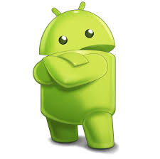
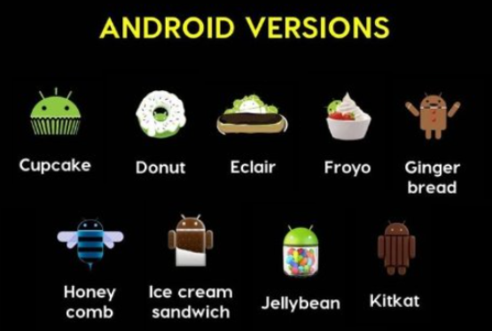
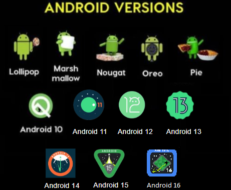

Android
O Android é um sistema operacional móvel de código aberto desenvolvido pelo Google, construído sobre o kernel Linux. Ele foi lançado em setembro de 2008 e desde então se tornou o sistema operacional mais usado no mundo em dispositivos móveis. Era um sistema pensado para celulares e tablets, a plataforma se expandiu para smartwatches, smart tvs, aparelhos da Internet das Coisas e outros dispositivos. Basicamente, o Android serve como a base de software que possibilita a interação entre o usuário e o hardware do dispositivo. Ele permite acessar aplicativos, serviços e funções, tornando o aparelho útil para diversas tarefas.

Multiconexões
Aqui estão alguns outros exemplos de conexões que é possível fazer com o sistema Android como fones bluetooth, alexas e carros que utilizam Android Auto.
História do Android
A história do Android tem início em 2003, com a fundação da startup Android Inc liderada por Rich Miner, Nick Sears, Chris White e Andy Rubin, em Palo Alto, Califórnia. A empresa inicialmente atuava no desenvolvimento de sistemas operacionais para câmeras digitais, porém foi observado que era uma área muito nichada que não traria muitos resultados, então optaram por criar uma plataforma de código aberto para dispositivos móveis e focar seu trabalho em sistemas operacionais para celulares. Em 2005, a Google interessada em entrar nesse mercado, adquiriu a Android Inc por US$ 50 milhões como um movimento estratégico para entrar no mercado de smartphones com um sistema operacional próprio. Em novembro de 2007, a big tech anunciou o Android como uma solução de software com padrões abertos visando inovar a indústria móvel. Então o Android 1.0, primeira versão comercial do SO, foi lançado juntamente com o smartphone HTC Dream – ou T-Mobile G1 – em setembro de 2008. O dispositivo combinava uma tela touchscreen com um teclado físico e trazia os serviços essenciais do Google, como Gmail, Maps e YouTube. Desde a estreia, a história do Android é marcada pela evolução constante a cada nova versão. As parcerias do Google com grandes fabricantes de celulares, como Samsung e Motorola, ajudaram a expandir a presença global do sistema operacional e estar presente em mais de 70% dos dispositivos móveis no mercado mundial.
Versões
O Android desde o seu lançamento ganhou várias versões do seu sistema, que visavam evoluir, melhorar as funcionalidades, corrigir erros aprimorar o sistema para o usuário. A partir da versão 1.5, os nomes de cada versão foram apelidados de doces conforme a ordem alfabética; isso acaba sendo perdido na versão 10 do Android que é apenas chamada de "Android 10". Atualmente estamos caminhando para o lançamento da mais nova versão do Android, o Android 16.


Ferramentas
Android Studio
O Android Studio é o ambiente de desenvolvimento integrado (IDE) oficial para o desenvolvimento de apps Android. Oferece ainda mais recursos para aumentar sua produtividade ao criar apps Android, como:
-> Um sistema de build flexível baseado em Gradle;
-> Um emulador rápido com inúmeros recursos;
-> Um ambiente unificado que possibilita o desenvolvimento para todos os dispositivos Android;
-> A Edição em tempo real para atualizar elementos combináveis em emuladores e dispositivos físicos;
-> Modelos de código e integração com GitHub para ajudar a criar recursos comuns de apps e importar exemplos de código;
-> Frameworks e ferramentas de teste cheios de possibilidades;
-> Ferramentas de lint para detectar problemas de desempenho, usabilidade, compatibilidade com versões, entre outros;
-> Suporte a C++ e NDK;
-> Compatibilidade integrada com o Google Cloud Platform, facilitando a integração do Google Cloud Messaging e do App Engine.
Quick Share
O Quick Share é um recurso de compartilhamento de arquivos para celulares Android e PCs com Windows. Integrada nativamente aos smartphones com o sistema operacional do Google e disponível para download na Windows Store, a ferramenta permite a conexão entre dispositivos via Bluetooth. Uma vez pareados, os usuários podem compartilhar qualquer tipo de arquivo com outros dispositivos compatíveis. Além do Bluetooth, o compartilhamento também pode ser feito por meio de um QR Code ou link de acesso. A seguir, confira o que é, para que serve e como usar o aplicativo Quick Share.
Nova Launcher
Nova Launcher é um aplicativo para administrar a interface do Android, que substitui seu gerenciador nativo do sistema com novas e mais práticas funções. Contando com as mais diversas opções de personalização, esta ferramenta permite a alteração das cores, temas, efeitos de transição e rolagem da tela, ícones e até de vários detalhes da estrutura da interface, disponibilizando a utilização de novos comandos por gestos, atalhos para inúmeras funções do sistema e a facilidade de criar e editar pastas para melhorar a organização de seus apps.
Extremamente rápido, este gerenciador ocupa pouquíssimo espaço na memória de seu aparelho e ainda permite fazer backups de suas configurações para exportá-las para outros dispositivos.